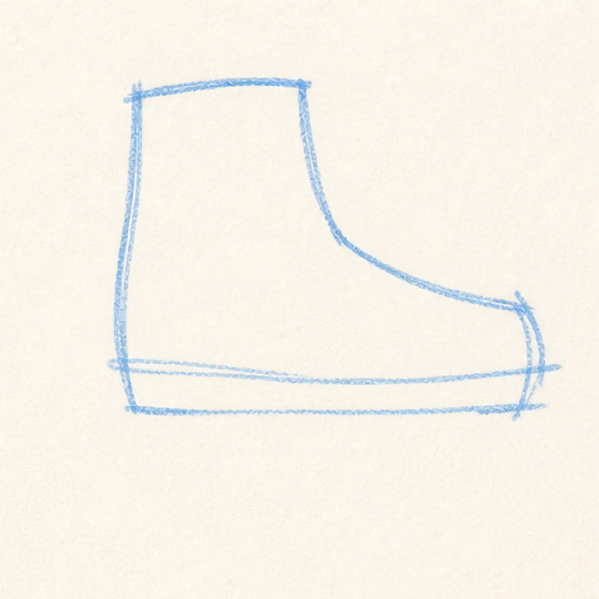
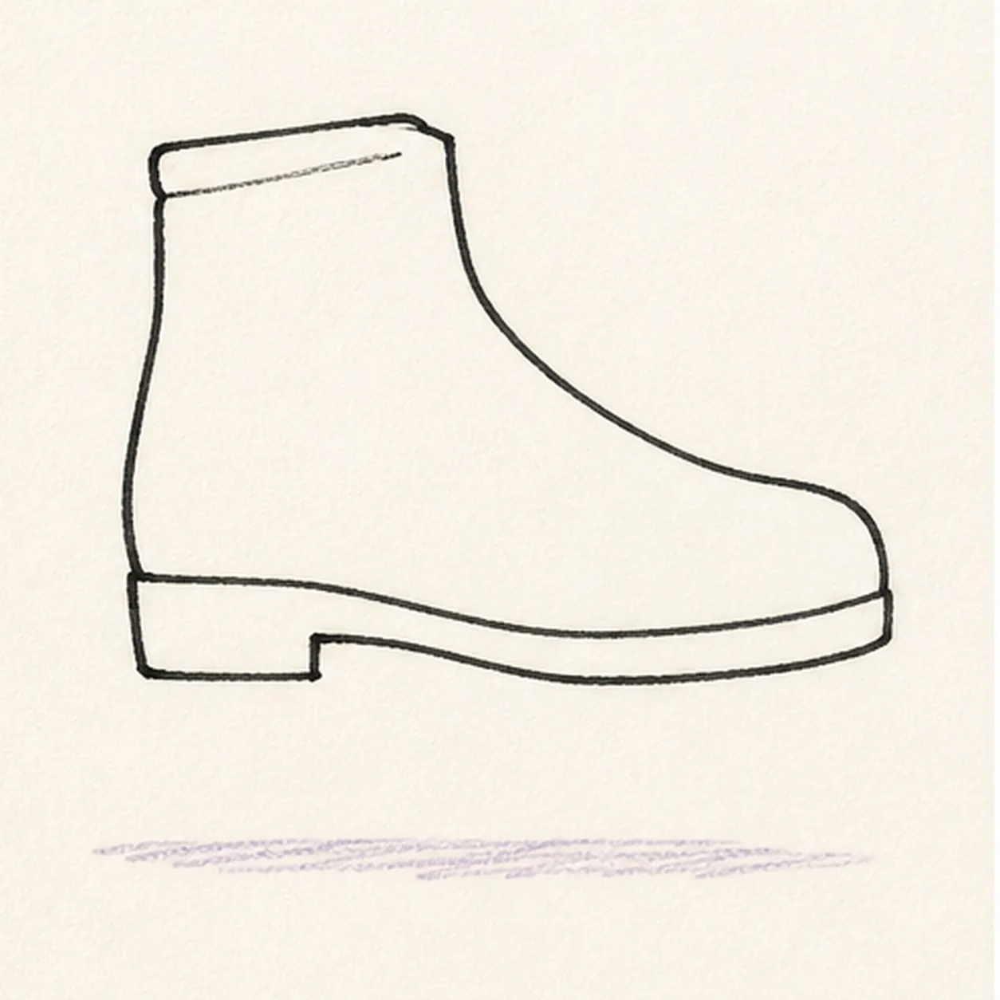
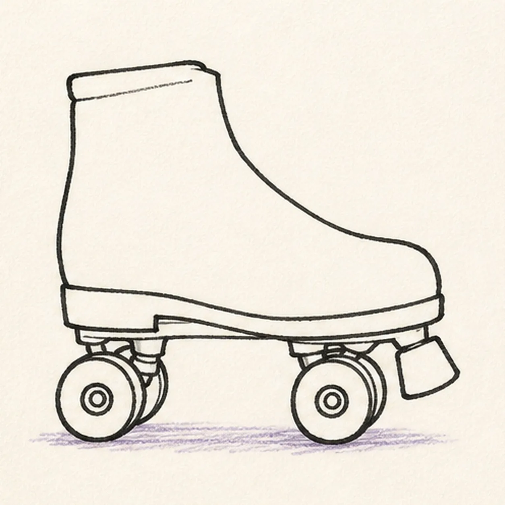
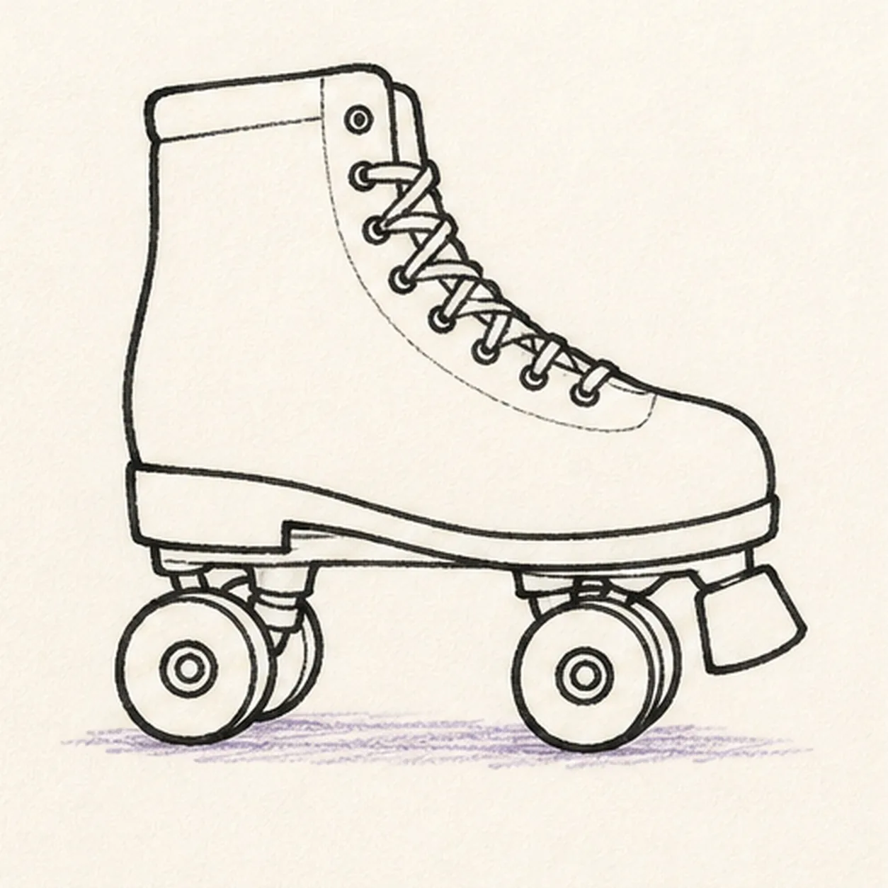
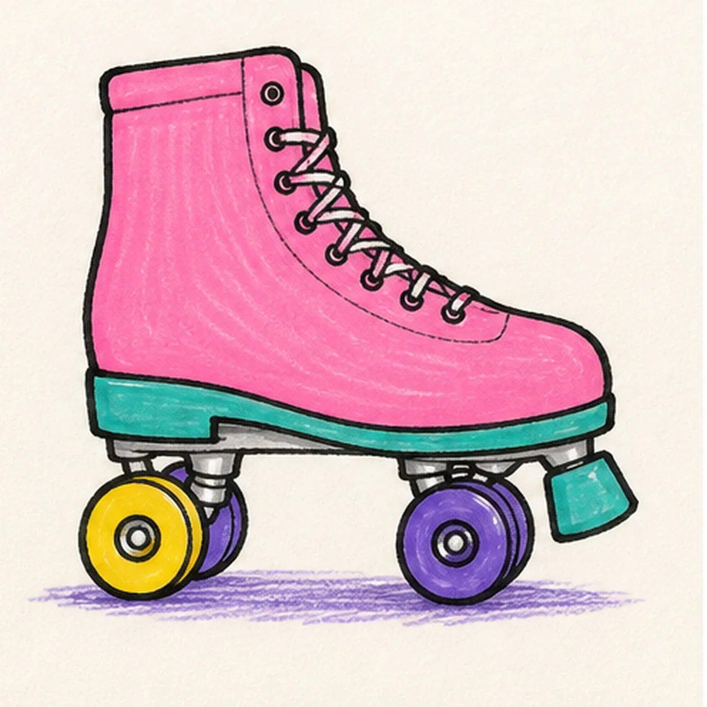

Felt-tip marker mode
Let's draw a cartoon roller skate
Treat this as one playful practice round: sketch the idea loosely, simplify the shapes, then commit with confident marker outlines and bright fills.
-
01

Block the boot
Draw a light side-view boot guide with a long toe pointing right and a raised ankle at the back.
Doodle tip: Ghost the long top curve twice before touching the marker down. A single confident sweep will look better than trying to sand the curve smooth with little marks.
-
02

Build the high-top
Add the chunky ankle-high boot and a separate sole, then pull a faint short ground line beneath the established shape.
Doodle tip: Keep the sole flatter than the boot. Comparing the slim gap between those two edges is an easy way to keep the skate from looking squashed.
-
03

Roll in the wheels
Attach four small wheels on simple trucks under the established sole.
Doodle tip: Lightly mark all four wheel centers before drawing the circles. Even spacing matters more than making every wheel exactly the same size.
-
04

Lace the boot
Add a short row of eyelets and crisscross laces along the existing front opening.
Doodle tip: Draw the eyelets first, then connect every other one with relaxed diagonal crossings. Let the laces overlap a little instead of turning them into a rigid ladder.
-
05

Color the skate
Trace the established skate in black, then fill the boot pink, sole teal, wheels yellow and purple, and the existing ground line purple.
Doodle tip: Fill the boot with long strokes that follow its curve. Leaving a little marker streak texture makes the color feel lively and handmade.
-
06

Make it roll
Strengthen the existing black contours and laces, tidy the pink, teal, yellow, and purple fills, and add tiny white highlights to the already colored boot and wheels.
Doodle tip: Stop before adding a face, a border, or more skates. The high-top, four wheels, and laces already make this one unmistakable.